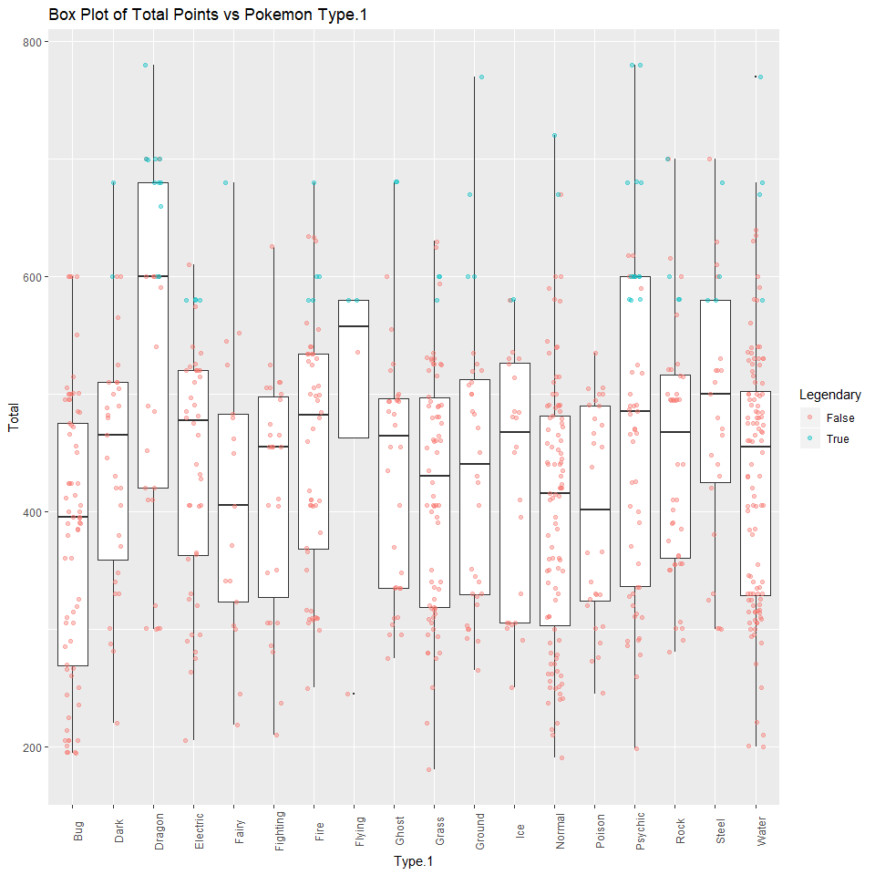
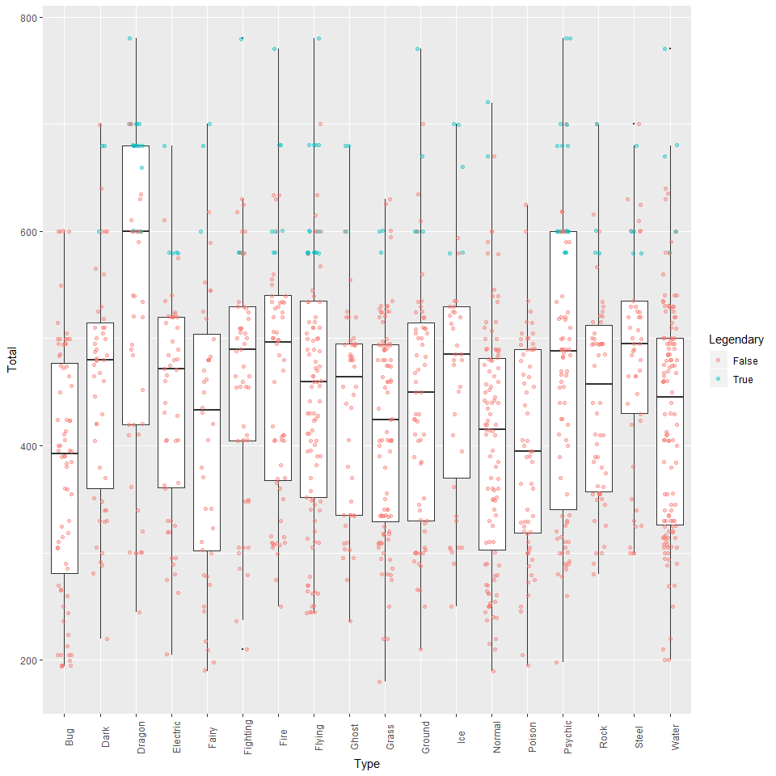
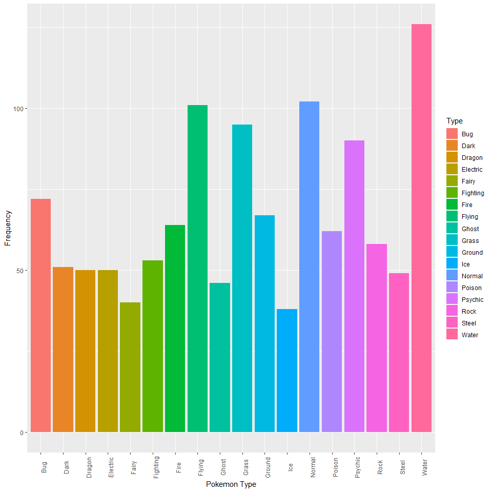
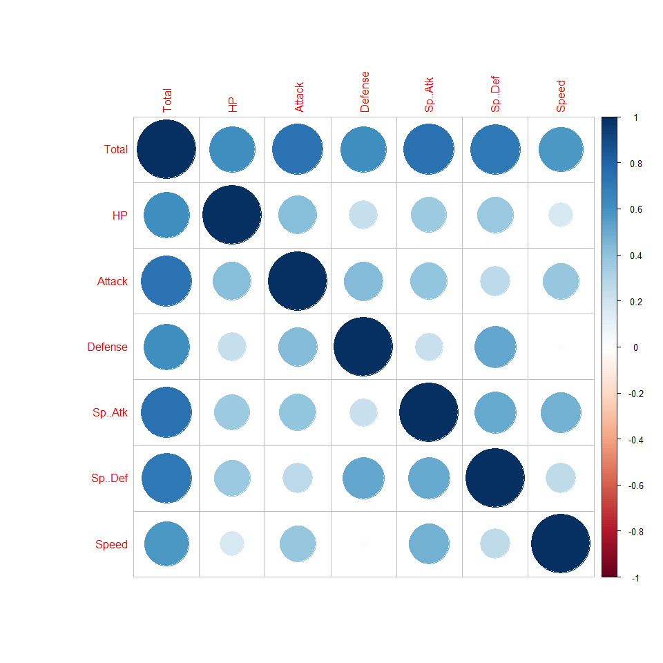

For my final Visual Analytics project, I have chosen to conduct analysis on the popular video game franchise of Pokemon. This dataset that I have found contains the data of all 807 different Pokemon. In order to understand and sufficiently make sense of the data I am about to visualize, however, it is important to understand what goes into a Pokemon. To start, asides from obviously having their own name, each Pokemon has a different elemental typing. This ranges from things such as Fire, Water or Grass type to things such as Dark, Fairy or Dragon type. Some Pokemon are only a singular typing, such as Grass, however there are also some that are two types, also known as dual-type such as Grass/Water.
Next are the Pokemons stats. These are individual values specific to each Pokemon which are contained into six separate categories: HP, Attack, Defense, Special Attack, Special Defense as well as Speed. These values are what categorizes a Pokemon as being particularly strong in one area or another. For instance, some Pokemon may have a high Attack stat and a low Defense stat while others may have a high Speed stat and a low HP stat. I will also be discussing "legendary" Pokemon which are Pokemon that have a plethora of high stats and will specifically analyze and discuss how they differ from average Pokemon.
Lastly, it is also important to note that each Pokemon is indigenous to a specific generation and place in time. There are 7 generations in total and each Pokemon was founded and belongs to a specific generation.
Here is the head of the dataframe I will be using to give an idea of exactly what goes into each Pokemon.
options(width = 110)
head(pkm) X. Name Type.1 Type.2 Total HP Attack Defense Sp..Atk Sp..Def Speed Generation Legendary
1 1 Bulbasaur Grass Poison 318 45 49 49 65 65 45 1 False
2 2 Ivysaur Grass Poison 405 60 62 63 80 80 60 1 False
3 3 Venusaur Grass Poison 525 80 82 83 100 100 80 1 False
4 3 VenusaurMega Venusaur Grass Poison 625 80 100 123 122 120 80 1 False
5 4 Charmander Fire 309 39 52 43 60 50 65 1 False
6 5 Charmeleon Fire 405 58 64 58 80 65 80 1 FalseFirst, using ranking analysis, we will try and visualize each type of Pokemon's total stat points as well as the totals of legendary Pokemon.
ggplot(pkm, aes(x=Type.1, y = Total)) + geom_boxplot(outlier.size=0) + geom_jitter(width=0.2,alpha=0.4,aes(color = Legendary))+theme(axis.text.x = element_text(angle = 90))+labs(title = 'Box Plot of Total Points vs Pokemon Type.1')
From this quick visualization we can see that legendary Pokemon tend to have a much higher total stat value than average Pokemon and we can also see that Dragon type Pokemon have on average the highest stat total. However since many Pokemon have two types, we cannot draw any meaningful conclusions from this graph as the Pokemon's type 1 and type 2 are interchangeable and one does not hold any weight over the other.
To do this we will try and combine type 1 and type 2 to get a more accurate visualization.
melted_pkm <- melt(pkm,id.vars = setdiff(names(pkm),c('Type.1','Type.2')),value.name = 'Type')
melted_pkm <- melted_pkm[melted_pkm$Type != '',]
ggplot(melted_pkm, aes(x=Type, y = Total)) + geom_boxplot(outlier.size=0) + geom_jitter(width=0.2,alpha=0.4,aes(color = Legendary))+theme(axis.text.x = element_text(angle = 90))
Now that we have combined the two typings into one variable, we can have a more accurate representation and visualization of our data. Although it looks like not much has changed with Dragon types still being the strongest and Bug types the weakest, we can now rest easy knowing that our data is complete and accurate.
ggplot(melted_pkm, aes(x = melted_pkm$Type, fill = Type)) + geom_bar()+theme(axis.text.x = element_text(angle = 90))+ xlab("Pokemon Type") + ylab("Frequency")
Here is a visualization of the melted frequency of each type of Pokemon. We can see that Water types are the most common while Ice, Fairy and Ghost types are among the least common.
Lastly I will conduct a correlation analysis on the individual stats of each Pokemon to discover if there is any correlation between stats present.
pkmdata = pkm[,c(5:11)]
corr = cor(pkmdata)
corrplot(corr)
From this correlation graph we can see that there are slight correlations between some of the stats with others, however disregarding redundant correlations such as the totals and the stats compared to themselves, there does not seem to be any significant correlation between the stats among themselves.